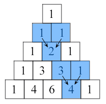

1. Write a
Python function to find the Max of three numbers.
Click me to see the sample solution
2. Write a
Python function to sum all the numbers in a list.
Sample List : (8, 2, 3, 0, 7)
Expected Output : 20
Click me to see the sample solution
3. Write a
Python function to multiply all the numbers in a list.
Sample List : (8, 2, 3, -1, 7)
Expected Output : -336
Click me to see the sample solution
4. Write a
Python program to reverse a string.
Sample String : "1234abcd"
Expected Output : "dcba4321"
Click me to see the sample solution
5. Write a
Python function to calculate the factorial of a number (a non-negative
integer). The function accepts the number as an argument.
Click me to see the sample solution
6.Write a Python
function to check whether a number is in a given range.
Click me to see the sample solution
7. Write a
Python function that accepts a string and calculate the number of upper case
letters and lower case letters.
Sample String : 'The quick Brow Fox'
Expected Output :
No. of Upper case characters : 3
No. of Lower case Characters : 12
Click me to see the sample solution
8. Write a
Python function that takes a list and returns a new list with unique elements
of the first list.
Sample List : [1,2,3,3,3,3,4,5]
Unique List : [1, 2, 3, 4, 5]
Click me to see the sample solution
9. Write a
Python function that takes a number as a parameter and check the number is
prime or not.
Note : A prime number (or a prime) is a natural number greater than 1 and that
has no positive divisors other than 1 and itself.
Click me to see the sample solution
10. Write a
Python program to print the even numbers from a given list.
Sample List : [1, 2, 3, 4, 5, 6, 7, 8, 9]
Expected Result : [2, 4, 6, 8]
Click me to see the sample solution
11. Write a
Python function to check whether a number is perfect or not.
According to Wikipedia : In number theory, a perfect number is a positive
integer that is equal to the sum of its proper positive divisors, that is, the
sum of its positive divisors excluding the number itself (also known as its
aliquot sum). Equivalently, a perfect number is a number that is half the sum
of all of its positive divisors (including itself).
Example : The first perfect number is 6, because 1, 2, and 3 are
its proper positive divisors, and 1 + 2 + 3 = 6. Equivalently, the number 6 is
equal to half the sum of all its positive divisors: ( 1 + 2 + 3 + 6 ) / 2 = 6.
The next perfect number is 28 = 1 + 2 + 4 + 7 + 14. This is followed by the
perfect numbers 496 and 8128.
Click me to see the sample solution
12. Write a
Python function that checks whether a passed string is palindrome or not.
Note: A palindrome is a word, phrase, or sequence that reads the same backward
as forward, e.g., madam or nurses run.
Click me to see the sample solution
13. Write a
Python function that prints out the first n rows of Pascal's triangle.
Note : Pascal's triangle is an arithmetic and geometric figure first imagined
by Blaise Pascal.
Sample Pascal's triangle :

Each
number is the two numbers above it added together
Click me to see the sample solution
14. Write a
Python function to check whether a string is a pangram or not.
Note : Pangrams are words or sentences containing every letter of the alphabet
at least once.
For example : "The quick brown fox jumps over the lazy dog"
Click me to see the sample solution
15. Write a
Python program that accepts a hyphen-separated sequence of words as input and
prints the words in a hyphen-separated sequence after sorting them
alphabetically.
Sample Items : green-red-yellow-black-white
Expected Result : black-green-red-white-yellow
Click me to see the sample solution
16. Write a
Python function to create and print a list where the values are square of
numbers between 1 and 30 (both included).
Click me to see the sample solution
17. Write a
Python program to make a chain of function decorators (bold, italic, underline
etc.) in Python.
Click me to see the sample solution
18. Write a Python
program to execute a string containing Python code.
Click me to see the sample solution
19. Write a
Python program to access a function inside a function.
Click me to see the sample solution
20. Write a
Python program to detect the number of local variables declared in a
function.
Click me to see the sample solution